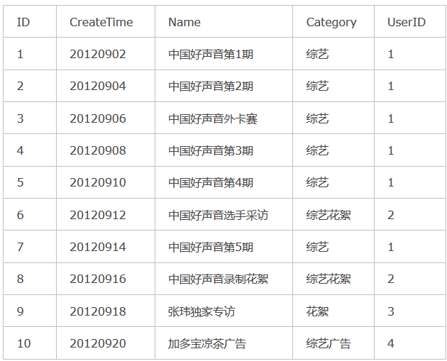
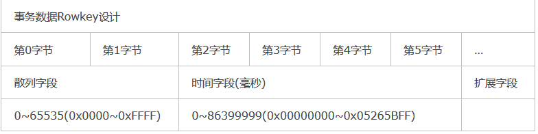
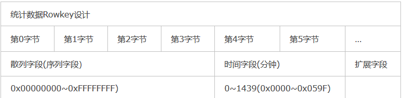
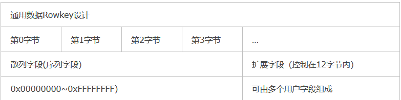

热点问题
当大量客户端的访问定向到群集的一个节点或仅几个节点时，就会发生热点。此访问可能是读取、可能是写入。大量的访问使负责管理该region的单台计算机不堪重负，从而导致性能下降并可能导致region不可用。这也可能对由同一regionserver管理的其他region产生不利影响，因为该主机无法满足请求的负载。设计数据访问模式非常重要，这样才能充分，均匀地利用群集。
rowkey的重要性
HBase由于其存储和读写的高性能，在OLAP分析中越来越发挥重要的作用。作为Nosql数据库的一员，HBase在查询数据时，只有两种方式：
- 通过Rowkey进行查询(Rowkey用来表示唯一一行记录)
- 全表扫描再结合过滤器筛选出目标数据,缺点是性能太低
因此，在存储数据之前，我们就应该想好未来可能发生的查询需求，比如，按照部门编号查询、按照日期查询、还是按照地域性查询。这样，我们在设计rowkey时，就可以存储一些比较关键的检索信息，尽可能的避免全表扫描，以提高查询性能。
-- 再次强调一下：
HBase中的数据是按照Rowkey的ASCII字典顺序进行全局排序的,有伙伴可能对ASCII字典序印象不够深刻，
下面举例说明：
-- 假如现在有5个Rowkey，分别是："012", "0", "123", "234", "3"
rowkey排序规则：
会先比较两个Rowkey的第一个字节，如果相同，然后会比对第二个字节，依次类推… 对比到第X个字节时，已经超出了其中一个Rowkey的长度，那么短的Rowkey就会排在前面。
“0”
“012”
“123”
“234”
“3”
因此：rowkey设计的长度最好一致的。
“012”, “000”, “123”, “234”, “003”
“000”
“003”
“012”
“123”
“234”
设计原则
唯一原则
必须在设计上保证其唯一性。
由于在HBase中数据存储是Key-Value形式，若HBase中同一张表插入相同Rowkey，并且是同一个列族下的同一个key时，如果version设置为1的话，则原先的数据会被覆盖掉，所以务必保证Rowkey的唯一性
长度原则
rowkey的长度统一。
Rowkey是一个二进制码流，Rowkey的长度被很多开发者建议说设计在10~100个字节，不过建议是越短越好，不要超过16个字节。
原因如下：
- 数据的持久化文件HFile中是按照KeyValue存储的，如果Rowkey过长比如100个字节，1000万列数据光Rowkey就要占用100*1000万=10亿个字节，将近1G数据，这会极大影响HFile的存储效率；
- MemStore将缓存部分数据到内存，如果Rowkey字段过长内存的有效利用率会降低，系统将无法缓存更多的数据，这会降低检索效率。因此Rowkey的字节长度越短越好。
- 目前操作系统是都是64位系统，内存8字节对齐。控制在16个字节，8字节的整数倍利用操作系统的最佳特性。
需要指出的是不仅Rowkey的长度是越短越好，而且列族名、列名等尽量使用短名字，因为HBase属于列式数据库，这些名字都是会写入到HBase的持久化文件HFile中去，过长的Rowkey、列族、列名都会导致整体的存储量成倍增加。
散列原则
我们设计的Rowkey应均匀的分布在各个HBase节点上。
拿常见的时间戳举例，假如Rowkey是按系统时间戳的方式递增，Rowkey的第一部分如果是时间戳信息的话将造成所有新数据都在一个RegionServer上堆积的热点现象，就是region热点问题。
我们可以采取下面三种方式，来解决这个Region热点问题：
Reverse反转
针对固定长度的Rowkey反转后存储，这样可以使Rowkey中经常改变的部分放在最前面，可以有效的随机Rowkey。
反转Rowkey的例子通常以手机举例，可以将手机号反转后的字符串作为Rowkey，这样的就避免了以手机号那样比较固定开头(137x、15x等)导致热点问题，这样做的缺点是牺牲了Rowkey的有序性。
Salting(加盐)
Salting是将每一个Rowkey加一个前缀，前缀使用一些随机字符，使得数据分散在多个不同的Region，达到Region负载均衡的目标。比如在一个有4个Region(注：以 [ ,a)、[a,b)、[b,c)、[c, )为Region起止)的HBase表中，
加Salt前的Rowkey：abc001、abc002、abc003
我们分别加上a、b、c前缀，加Salt后Rowkey为：a-abc001、b-abc002、c-abc003
可以看到，加盐前的Rowkey默认会在第2个region中，加盐后的Rowkey数据会分布在3个region中，理论上处理后的吞吐量应是之前的3倍。由于前缀是随机的，读这些数据时需要耗费更多的时间，所以Salt增加了写操作的吞吐量，不过缺点是同时增加了读操作的开销。
Hash散列或者Mod
用Hash散列来替代随机Salt前缀的好处是能让一个给定的行有相同的前缀，这在分散了Region负载的同时，使读操作也能够推断。确定性Hash(比如md5后取前4位做前缀)能让客户端重建完整的RowKey，可以使用get操作直接get想要的行。
例如将上述的原始Rowkey经过hash处理，此处我们采用md5散列算法取前4位做前缀，结果如下
9bf0-abc001 （abc001在md5后是9bf049097142c168c38a94c626eddf3d，取前4位是9bf0）
7006-abc002
95e6-abc003
若用前4个字符作为不同分区的起止，上面几个Rowkey数据会分布在3个region中。实际应用场景是当数据量越来越大的时候，这种设计会使得分区之间更加均衡。
如果Rowkey是数字类型的，也可以考虑Mod方法。
案例演示
支持多条件查询的RowKey设计
提示说明
HBase按指定的条件获取一批记录时，使用的就是scan方法。 scan方法有以下特点：
1 | -1. scan可以通过setCaching与setBatch方法提高速度。（以空间换时间） |
因此，在满足长度、散列、唯一原则后，我们只需要考虑如何通过巧妙设计RowKey来利用scan方法的范围功能，使得获取一批记录的查询速度能提高。
案例需求
下例就描述如何将多个列组合成一个RowKey，使用scan的range来达到较快查询速度。

以图为例，我们在表中存储的是文件信息，每个文件有5个属性：文件id（long，全局唯一）、创建时间（long）、文件名（String）、分类名（String）、所有者（User）。
这里UserID对应另一张User表，暂不列出。我们只需知道UserID的含义。
1 | 1代表 浙江卫视； |
我们的需求是按照以下条件进行查询：
1 | -1. 文件创建时间区间 （比如从20120901到20120914期间创建的文件） |
调用查询接口的时候将上述5个条件同时输入到find(20120901,20120914,”中国好声音”,”综艺”,”浙江卫视”)。此时我们应该得到的记录应该有第1、2、3、4、5、7条。第6条由于不属于“浙江卫视”应该不被选中。
rowkey设计
我们在设计RowKey时可以这样做：采用 UserID + CreateTime + FileID组成RowKey，这样既能满足多条件查询，又能有很快的查询速度。
需要注意以下几点：
1 | - 每条记录的RowKey，每个字段都需要填充到相同长度。 |
按照这种RowKey存储上述文件记录，在HBase表中是下面的结构：
1 | rowKey（userID 6 + time 8 + fileID 6） name category …. |
查询
1 | -1. 在建立一个scan对象后，我们setStartRow(00000120120901)，setEndRow(00000120120914)。 |
以上，我们完成了高性能的支持多条件查询的HBase表结构设计。
针对事务数据Rowkey设计
1 | Rowkey。如下图所示： |

1 | 这样的设计从操作系统内存管理层面无法节省开销，因为64位操作系统是必须8字节对齐。但是对于持久化存储中Rowkey部分可以节省25%的开销。也许有人要问为什么不将时间字段以主机字节序保存，这样它也可以作为散列字段了。这是因为时间范围内的数据还是尽量保证连续，相同时间范围内的数据查找的概率很大，对查询检索有好的效果，因此使用独立的散列字段效果更好，对于某些应用，我们可以考虑利用散列字段全部或者部分来存储某些数据的字段信息，只要保证相同散列值在同一时间（毫秒）唯一。 |
针对统计数据的Rowkey设计
1 | 统计数据也是带时间属性的，统计数据最小单位只会到分钟（到秒预统计就没意义了）。同时对于统计数据我们也缺省采用按天数据分表，这样设计的好处无需多说。按天分表后，时间信息只需要保留小时分钟，那么0~1400只需占用两个字节即可保存时间信息。由于统计数据某些维度数量非常庞大，因此需要4个字节作为序列字段，因此将散列字段同时作为序列字段使用也是6个字节组成唯一Rowkey。如下图所示： |

1 | 同样这样的设计从操作系统内存管理层面无法节省开销，因为64位操作系统是必须8字节对齐。但是对于持久化存储中Rowkey部分可以节省25%的开销。预统计数据可能涉及到多次反复的重计算要求，需确保作废的数据能有效删除，同时不能影响散列的均衡效果，因此要特殊处理。 |
针对通用数据的Rowkey设计
1 | 通用数据采用自增序列作为唯一主键，用户可以选择按天建分表也可以选择单表模式。这种模式需要确保同时多个入库加载模块运行时散列字段（序列字段）的唯一性。可以考虑给不同的加载模块赋予唯一因子区别。设计结构如下图所示。 |


...
...
This is copyright.